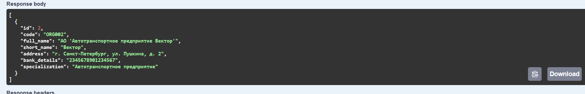
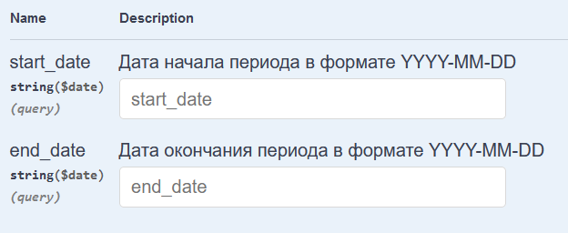
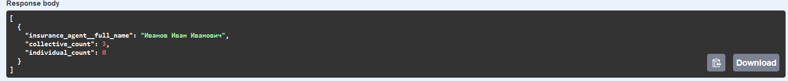
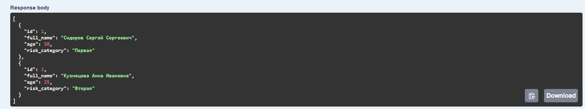
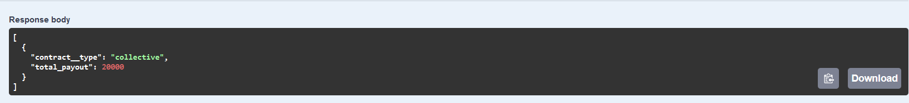
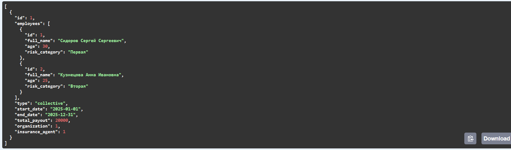

Реализация серверной части приложения средствами django и djangorestframework в соответствии с заданием из текста работы.
Описание моего варианта Создать программную систему, предназначенную для управления договорами страхования с физическими лицами и юридическими организациями. Страховая организация заключает договоры. Для организации оформляется коллективный договор, в котором перечислены страхуемые сотрудники: ФИО, возраст, категория риска (первая, вторая, высшая и т.п.). О предприятии хранится следующая информация: код, полное наименование, краткое наименование, адрес, банковские реквизиты (номер банка), специализация предприятия (медицинское учреждение, автотранспортное предприятие, учебное заведение и т.п.). В заключаемом коллективном договоре указывается дата заключения, срок договора (начало и конец действия договора), сумма выплат по каждой категории сотрудников, выплаты по страховым случаям. Выплаты зависят от категории сотрудника. Необходимо также хранить информацию о страховом агенте, заключившем договор (ФИО, паспортные данные, контактные данные). Каждый агент может заключить много договоров, в каждом договоре может быть оформлено несколько сотрудников. С физическим лицом заключается индивидуальный договор. Каждый конкретный договор может быть заключен только одним агентом. При возникновении страхового случая необходима информация о его дате, причине, решении о выплате страховой суммы и размере выплаты. Директор компании должен иметь возможность принять и уволить на работу страхового агента. Поэтому должна сохраняться информация о заключенных с ними трудовых договорах. Перечень возможных запросов:
- Для заданной организации вывести список других организаций, застрахованных теми же агентами, что и заданная, для действующих договоров.
- Для каждого агента вывести количество заключенных им договоров каждого типа за определенный период времени.
- Для заданной персоны вывести список застрахованных сотрудников в одном коллективном договоре для действующих коллективных договоров.
- Вывести общую сумму выплат по каждому типу договоров при возникших страховых случаях за заданный период времени.
- Для каждого юридического лица вывести реквизиты договора и общую сумму выплат по всем категориям сотрудников.
Стек реализации
Язык: Python
фреймворк : Django, DRF
Документация к сериализаторам
InsuranceAgentSerializer
Этот класс используется для сериализации модели InsuranceAgent. Он преобразует данные модели в формат JSON и обратно.
Поля:
model: указывает на модельInsuranceAgent.fields: включает все поля модели.
OrganizationSerializer
Сериализатор для модели Organization. Используется для преобразования данных модели в формат JSON и обратно.
Поля:
model: модельOrganization.fields: включает все поля модели.
EmployeeSerializer
Этот сериализатор отвечает за преобразование данных модели Employee в формат JSON и обратно.
Поля:
model: модельEmployee.fields: включает все поля модели.
CollectiveContractSerializer
Сериализатор для модели CollectiveContract. Он используется для преобразования всех данных модели.
Поля:
model: модельCollectiveContract.fields: включает все поля модели.
InsuranceCaseSerializer
Сериализатор для работы с моделью InsuranceCase. Предназначен для преобразования данных модели.
Поля:
model: модельInsuranceCase.fields: включает все поля модели.
EmploymentContractSerializer
Сериализатор для модели EmploymentContract. Этот класс включает данные об агенте страхования с использованием вложенного сериализатора.
Поля:
model: модельEmploymentContract.fields: включает все поля модели.insurance_agent: сериализатор для агента страхования, только для чтения.
Документация для views.py
Класс: InsuranceAgentViewSet
Обрабатывает операции CRUD и бизнес-логику для объектов InsuranceAgent.
Функция: create
Создаёт или получает страхового агента на основе паспортных данных и генерирует новый трудовой договор для агента.
def create(self, request, *args, **kwargs):
passport_details = request.data.get('passport_details')
agent, created = InsuranceAgent.objects.get_or_create(passport_details=passport_details, defaults=request.data)
if created:
message = 'Создан новый агент.'
else:
message = 'Агент уже существует.'
start_date = now().date()
end_date = start_date + timedelta(days=365)
new_contract = EmploymentContract.objects.create(
insurance_agent=agent,
start_date=start_date,
end_date=end_date
)
contract_serializer = EmploymentContractSerializer(new_contract)
return Response({
'message': f'{message} Создан новый договор.',
'agent': self.get_serializer(agent).data,
'contract': contract_serializer.data
}, status=status.HTTP_201_CREATED if created else status.HTTP_200_OK)
Класс: OrganizationViewSet
Обрабатывает операции CRUD и связанные данные для объектов Organization.
Функция: related_organizations
Получает организации, связанные с текущей на основе общих активных договоров.
@action(detail=True, methods=['get'])
def related_organizations(self, request, pk=None):
organization = self.get_object()
current_date = request.query_params.get('current_date')
if current_date is None:
current_date = now().date()
agent_ids = organization.collectivecontract_set.filter(
end_date__gte=current_date
).values_list('insurance_agent_id', flat=True)
related_orgs = Organization.objects.filter(
collectivecontract__insurance_agent_id__in=agent_ids,
collectivecontract__end_date__gte=current_date
).distinct().exclude(id=organization.id)
serializer = self.get_serializer(related_orgs, many=True)
return Response(serializer.data)
Функция: contract_details_and_payouts
Получает данные о договорах и их общих выплатах для заданной организации.
@action(detail=True, methods=['get'])
def contract_details_and_payouts(self, request, pk=None):
organization = Organization.objects.get(pk=pk)
contracts = CollectiveContract.objects.filter(organization=organization)
serialized_contracts = CollectiveContractSerializer(contracts, many=True).data
for contract_data, contract in zip(serialized_contracts, contracts):
total_payout = contract.insurancecase_set.aggregate(total=Sum('payout_amount'))['total'] or 0
contract_data['total_payout'] = total_payout
return Response(serialized_contracts)
Класс: CollectiveContractViewSet
Управляет объектами CollectiveContract и связанными данными.
Функция: agent_contracts_count
Получает количество договоров (коллективных и индивидуальных) для агентов в указанном диапазоне дат.
@swagger_auto_schema(
manual_parameters=[
openapi.Parameter(
'start_date',
openapi.IN_QUERY,
description="Дата начала периода в формате YYYY-MM-DD",
type=openapi.TYPE_STRING,
format=openapi.FORMAT_DATE
),
openapi.Parameter(
'end_date',
openapi.IN_QUERY,
description="Дата окончания периода в формате YYYY-MM-DD",
type=openapi.TYPE_STRING,
format=openapi.FORMAT_DATE
)
]
)
@action(detail=False, methods=['get'])
def agent_contracts_count(self, request):
start_date = request.query_params.get('start_date')
end_date = request.query_params.get('end_date')
if not start_date:
start_date = '1900-01-01'
if not end_date:
end_date = '2500-01-01'
contracts = CollectiveContract.objects.filter(start_date__gte=start_date, end_date__lte=end_date)
result = contracts.values('insurance_agent__full_name').annotate(
collective_count=Count('id', filter=Q(organization__isnull=False)),
individual_count=Count('id', filter=Q(organization__isnull=True))
)
return Response(result)
Функция: insured_employees
Получает всех сотрудников, застрахованных по конкретному коллективному договору.
@action(detail=True, methods=['get'])
def insured_employees(self, request, pk=None):
contract = self.get_object()
employees = contract.employees.all()
serializer = EmployeeSerializer(employees, many=True)
return Response(serializer.data)
Класс: EmployeeCaseViewSet
Обрабатывает операции CRUD для объектов Employee.
Класс: InsuranceCaseViewSet
Управляет объектами InsuranceCase и их выплатами.
Функция: total_payouts
Получает общую сумму выплат, сгруппированных по типу договора, в указанном диапазоне дат.
@action(detail=False, methods=['get'])
def total_payouts(self, request):
start_date = request.query_params.get('start_date')
end_date = request.query_params.get('end_date')
if not start_date:
start_date = '1900-01-01'
if not end_date:
end_date = '2100-01-01'
cases = InsuranceCase.objects.filter(date__gte=start_date, date__lte=end_date)
result = cases.values('contract__type').annotate(total_payout=Sum('payout_amount'))
return Response(result)
Djoser
метод POST создания пользователя http://127.0.0.1:8000/auth/users/
Метод POST Получение токена http://127.0.0.1:8000/auth/token/login
Метов GET Получение пользователя по токену http://127.0.0.1:8000/auth/users/me/
Аналитические запросы
1 Для заданной организации вывести список других организаций, застрахованных теми же агентами, что и заданная, для действующих договоров.
GET /organizations/{id}/related_organizations/  2 Для каждого агента вывести количество заключенных им договоров каждого типа за определенный период времени.
GET /collective-contracts/agent_contracts_count/  
3 Для заданной персоны вывести список застрахованных сотрудников в одном коллективном договоре для действующих коллективных договоров. GET /collective-contracts/{id}/insured_employees/  4 Вывести общую сумму выплат по каждому типу договоров при возникших страховых случаях за заданный период времени.
GET /insurance-cases/total_payouts/ 
5 Для каждого юридического лица вывести реквизиты договора и общую сумму выплат по всем категориям сотрудников. GET /organizations/{id}/contract_details_and_payouts/
